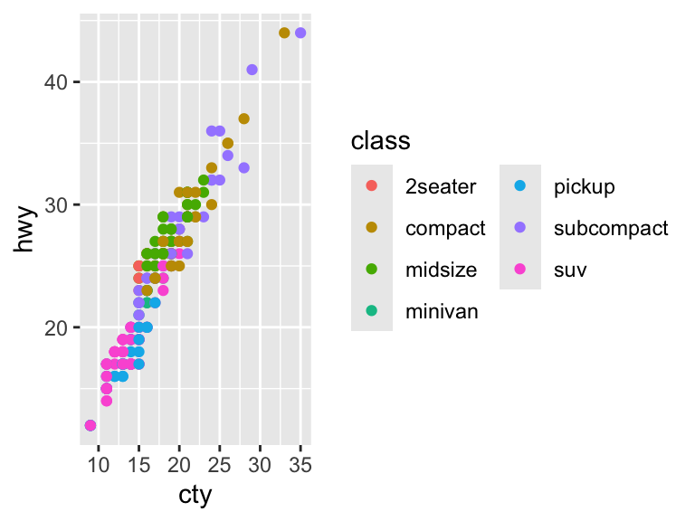
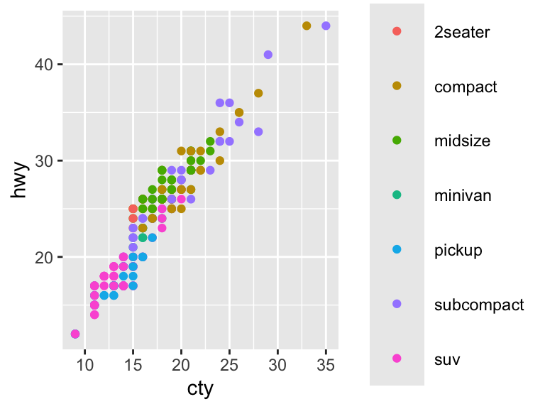

library(dplyr)
library(ggplot2)
library(ggthemes)
library(RColorBrewer)
library(readr)
library(tidyr)
library(wesanderson) # Optional11 Data Visualization
Here are all the libraries you should install for this chapter.
One of R’s biggest advantages is its potential for creating informative and high-quality plots. This chapter goes through the built-in functions to produce graphs. Even just these functions allow for a wide variety of types of plots and aesthetic adjustments. Then, this chapter goes through the functions in the package ggplot2. These functions add a professional polish to the plots that is harder to achieve with the built-in functions.
11.1 Basic Graphs
11.1.1 Scatter and Line Plots
The function plot() is the most basic plot function. It takes many data structures as inputs, including vectors. If only one vector is specified, it is plotted against an index axis.
y <- 1:10
plot(y)If two vectors are specified, the first one is the horizontal axis and the second is the vertical axis.
x <- 11:20
plot(x, y)The argument pch adjust the symbol. See ?pch for more information, but the symbols are here for reference. You can also specify the symbol in quotation marks.

The argument cex adjusts the size of the point. The default is 1. Setting the argument larger than 1 will make it larger while setting the argument less than 1 will make it smaller. Values less than or equal to 0 will result in no points being plotted. The col argument adjusts the color of the point. To just get the names of the built-in colors, type colors(). Here is a reference that lists the names next to the shade.1
plot(x, pch = 8, cex = 0.9, col = "blue")plot(x, pch = "a", cex = 1.2, col = "mediumorchid")plot(x, pch = 23, bg = "palegreen", col = "palegreen4", cex = 2)We can change this scatter plot to a line plot by changing the type argument. The value "p" plots points and is the default; "l" plots lines (there are more types listed in the documentation). The argument lwd controls with width of the line and works the same as cex. The argument lty determines the line type. Here are the available types.

plot(x, type = "l")plot(x, type = "l", lwd = 1.2, lty = 4)Here are the arguments to define the title, axes, axis labels, and the look of the plot environment. The default axis labels will correspond to the object name. The default limits of the axes will correspond to the values of the object. Changing them simply involves defining a lower and upper limit. The arguments xaxt = "n" and yaxt = "n" remove the axes. The argument bty = "n" removes the box surrounding the plot.
plot(x, main = "Title", xlab = "x-axis", ylab = "y-axis")plot(x, xlim = c(0, 15))plot(x, xaxt = "n", yaxt = "n")plot(x, bty = "n")There are many other aesthetic elements of plot() available in the function’s documentation. These basics are sufficient to demonstrate how plot() can be used with data. The tibble txhousing is one of the built-in datasets in the ggplot2 package.
head(txhousing)# A tibble: 6 × 9
city year month sales volume median listings inventory date
<chr> <int> <int> <dbl> <dbl> <dbl> <dbl> <dbl> <dbl>
1 Abilene 2000 1 72 5380000 71400 701 6.3 2000
2 Abilene 2000 2 98 6505000 58700 746 6.6 2000.
3 Abilene 2000 3 130 9285000 58100 784 6.8 2000.
4 Abilene 2000 4 98 9730000 68600 785 6.9 2000.
5 Abilene 2000 5 141 10590000 67300 794 6.8 2000.
6 Abilene 2000 6 156 13910000 66900 780 6.6 2000.df <- as.data.frame(txhousing) # Convert to data frame to use built-in functions smoothlyIt is very simple to graph the pairwise scatter plots to get a sense of the pairwise correlations.
df %>%
select(sales, volume, median) %>%
plot()With an actual dataset, we can use the features of plot() in a more meaningful way. The function points() allows you to layer scatter plots on the active plot.
plot(df[df$city == "Houston", "date"],
df[df$city == "Houston", "median"],
pch = 16, col = "purple", ylim = c(75000, 220000),
xlab = "Date", ylab = "Median Price")
points(df[df$city == "Fort Worth", "date"],
df[df$city == "Fort Worth", "median"],
pch = 16, col = "red")The function lines() works analogously.
plot(df[df$city == "Houston", "date"],
df[df$city == "Houston", "median"],
type = "l", ylim = c(75000, 220000),
xlab = "Date", ylab = "Median Price")
lines(df[df$city == "Fort Worth", "date"],
df[df$city == "Fort Worth", "median"],
lty = 5)11.1.2 Bar Plots
Bar plots are useful for visualizing categorical data. The built-in data frame USPersonalExpenditure is useful for illustration, following chapter 4.1 of Zamora Saiz et al. (2020).
USPersonalExpenditure 1940 1945 1950 1955 1960
Food and Tobacco 22.200 44.500 59.60 73.2 86.80
Household Operation 10.500 15.500 29.00 36.5 46.20
Medical and Health 3.530 5.760 9.71 14.0 21.10
Personal Care 1.040 1.980 2.45 3.4 5.40
Private Education 0.341 0.974 1.80 2.6 3.64You can plot one column of the data, in this case personal expenditure in 1960. Each bar represents a category of expenditure. The argument cex.names controls the size of the labels.
barplot(USPersonalExpenditure[, 5],
ylab = "Billions USD", cex.names = 0.3,
col = "coral2")Plotting over the whole dataset, the bars are automatically stacked so that now, each bar represents a column (year). The argument legend.text = TRUE makes the legend appear. The argument args.legend controls the position of the legend and the size of the text.
barplot(USPersonalExpenditure, legend.text = TRUE,
args.legend = c(x = 2, y = 150, cex = 0.5))To unstack the plot, use the argument beside = TRUE.
barplot(USPersonalExpenditure, legend.text = TRUE,
args.legend = c(x = 10, y = 80, cex = 0.5),
beside = TRUE)Dot charts achieve a similar goal as bar plots.
dotchart(USPersonalExpenditure[, 5], main = "Personal Expenditure, 1960")dotchart(USPersonalExpenditure, cex = 0.5, pch = 2)11.1.3 Distributions
Box and whisker plots display the median, inter-quartile range, and outliers. Recall that df is a data frame of Texas housing prices.
head(df) city year month sales volume median listings inventory date
1 Abilene 2000 1 72 5380000 71400 701 6.3 2000.000
2 Abilene 2000 2 98 6505000 58700 746 6.6 2000.083
3 Abilene 2000 3 130 9285000 58100 784 6.8 2000.167
4 Abilene 2000 4 98 9730000 68600 785 6.9 2000.250
5 Abilene 2000 5 141 10590000 67300 794 6.8 2000.333
6 Abilene 2000 6 156 13910000 66900 780 6.6 2000.417boxplot(df$median ~ df$year, ylab = "Median Sales", xlab = "Year")The plot can be saved to an object to extract the underlying numbers: the median, quartiles, and end of the whiskers (stats), sample size (n), outliers (out), and the number and names of groups (group, names).
boxdf <- boxplot(df$median ~ df$year)str(boxdf)List of 6
$ stats: num [1:5, 1:16] 55800 78700 88300 110800 158700 ...
$ n : num [1:16] 450 451 427 471 492 497 523 528 531 542 ...
$ conf : num [1:2, 1:16] 85909 90691 87203 92797 90757 ...
$ out : num [1:59] 159500 167600 167600 169700 164000 ...
$ group: num [1:59] 1 1 1 1 1 1 1 1 1 2 ...
$ names: chr [1:16] "2000" "2001" "2002" "2003" ...The function hist() produces histograms. The default is to plot absolute frequencies (set freq = FALSE to plot densities). The breaks are determined by R, but can be specified with the breaks argument.
hist(df$median, xlab = "Median Sales")hist(df$median, xlab = "Median Sales",
breaks = seq(50000, 305000, 5000))Just like with the box and whisker plot, you can save the inputs for the histogram to an object.
dfhist <- hist(df$median, breaks = 15)str(dfhist)List of 6
$ breaks : int [1:15] 40000 60000 80000 100000 120000 140000 160000 180000 200000 220000 ...
$ counts : int [1:14] 27 513 1517 1640 1684 1230 673 353 177 82 ...
$ density : num [1:14] 1.69e-07 3.21e-06 9.50e-06 1.03e-05 1.05e-05 ...
$ mids : num [1:14] 50000 70000 90000 110000 130000 150000 170000 190000 210000 230000 ...
$ xname : chr "df$median"
$ equidist: logi TRUE
- attr(*, "class")= chr "histogram"11.1.4 Mathematical Functions
The function curve() allows you to plot mathematical functions. This can be done for simple functions.
curve(sin, from = 0, to = 2 * pi)It can also be used on more complex functions, including those that are user-defined and have more than one argument.
crra <- function(x, eta) {
if (eta == 1) {
log(x)
} else{
(x^(1 - eta) - 1) / (1 - eta)
}
}
curve(crra(x, eta = 1.2), xlim = c(1, 3), type = "l")
curve(crra(x, eta = 2), add = TRUE)11.1.5 Practice Exercises
- Create a plot that has 5 lines for each of the values of \(\eta\) in the CRRA utility function: 0, 0.5, 1, 5, and 10.
etas <- c(0, 0.5, 1, 5, 10)
for (i in 1:length(etas)) {
curve(crra(x, eta = etas[i]), xlim = c(1, 3), type = "l", add = (i != 1))
}11.2 ggplot2
Many separate components are implicit in the graphs created by the built-in functions. These components, such as the axes, come together to form a unified visual representation of the data. The package ggplot2 makes these different components explicit, providing easy access to more advanced customization for more precise graphs. Even without much customization, the default styles are aesthetically pleasing, or at least more so than the baseline functions resulting from the built-in functions.
11.2.1 Overview
The approach of ggplot2 specifies the layers of a plot, providing a “grammar” that can be applied to any situation. Compared to the built-in functions, it is much easier to combine different elements in one graph. All plots contain three main components.2
- Data to visualize
- Aesthetic mappings relating the data to aesthetics
- Geometric objects (e.g., lines and points) to represent the data in a layer (geom)
In the example below, the data are the built-in mpg dataset. The aesthetic mapping is between engine size (displ) and highway miles per gallon (hwy). The geometric layer consists of points, geom_point(). The data are specified in ggplot(), the aesthetic mapping in aes(), and a layer is added with +. This is the basic structure of a ggplot2 graph.
ggplot(data = mpg, aes(x = displ, y = hwy)) +
geom_point()
To be clear, we can build the plot one component at a time. The below creates a plot with a dataset and default aesthetic mappings. There is no geometric element though.
ggplot(mpg, aes(displ, hwy))Adding geom_point() adds the geometric element to make a scatter plot. Without specifying anything in geom_point(), it inherits the data and aesthetic mappings of ggplot(). Note that the variables are typed directly.
ggplot(mpg, aes(displ, hwy)) +
geom_point()11.2.1.1 Scatter Plots
There are other aesthetic elements besides x and y, including color, shape, and size. Add the color element to the geometric layer, geom_point(), to change the color of the geographic elements. Note that this is outside aes().
ggplot(mpg, aes(x = displ, y = hwy)) +
geom_point(color = "cyan4")The color can also communicate another dimension of the data. Here, ggplot2 maps directly from type of car (class) to a color scale (described in the legend).
ggplot(mpg, aes(x = displ, y = hwy, color = class)) +
geom_point()
The variable class is a character string and so the scale is discrete. If we use a continuous variable, then the scale changes.
ggplot(mpg, aes(x = displ, y = hwy, color = year)) +
geom_point()Shape and size are controlled in similar ways as color. The shapes are the same as for the built-in functions.
ggplot(mpg, aes(x = displ, y = hwy)) +
geom_point(size = 3)ggplot(mpg, aes(x = displ, y = hwy)) +
geom_point(shape = 21)You cannot map between a continuous variable and shape. While it is possible to map between a discrete variable and size, it is not advised and R will throw a warning.
ggplot(mpg, aes(x = displ, y = hwy, shape = drv)) +
geom_point()ggplot(mpg, aes(x = displ, y = hwy, size = cyl)) +
geom_point(alpha = 1 / 3) # alpha adjusts the opacityAdding more layers in ggplot2 is straightforward. For scatter plots, it may be relevant to add a (curved) line depicting some average. The geom geom_smooth() fits a smooth plot to the data, including the standard error.
ggplot(mpg, aes(x = displ, y = hwy)) +
geom_point() +
geom_smooth()`geom_smooth()` using method = 'loess' and formula = 'y ~ x'Specify se = FALSE to remove the standard error.
ggplot(mpg, aes(x = displ, y = hwy)) +
geom_point() +
geom_smooth(se = FALSE)`geom_smooth()` using method = 'loess' and formula = 'y ~ x'
The default smoothing is LOWESS. The argument scan controls the distance between a given observation and the smoothed line and must be between 0 and 1. A distance of 1 results in a very smooth curve, while a distance of 0 results in a less smooth curve. With a large dataset, you will need to load the package mgcv to fit another smoothing model.
ggplot(mpg, aes(x = displ, y = hwy)) +
geom_point() +
geom_smooth(span = 0.2)`geom_smooth()` using method = 'loess' and formula = 'y ~ x'To fit a linear model, specify method = "lm". Note that the message changes to reflect the fact that a linear model is being fit.
ggplot(mpg, aes(x = displ, y = hwy)) +
geom_point() +
geom_smooth(method = "lm")`geom_smooth()` using formula = 'y ~ x'Aesthetic elements of the line can be controlled in the geom_smooth() geom.
ggplot(mpg, aes(x = displ, y = hwy)) +
geom_point() +
geom_smooth(method = "lm",
alpha = 0.5, color = "firebrick4", fill = "firebrick1")`geom_smooth()` using formula = 'y ~ x'11.2.1.2 Practice Exercises
- Correct and simplify the following specifications.
# 1
ggplot(mpg) +
geom_point(aes(mpg$displ, mpg$hwy))
# 2
ggplot() +
geom_point(mapping = aes(y = hwy, x = cty), data = mpg) +
geom_smooth(data = mpg, mapping = aes(cty, hwy))
# 3
ggplot(diamonds, aes(carat, price)) +
geom_point(aes(log(brainwt), log(bodywt)), data = msleep)- If we add an aesthetic to the base layer, it affects all subsequent layers. What is the difference between these three plots?
# 1
ggplot(mpg, aes(x = displ, y = hwy, color = factor(cyl))) +
geom_point() +
geom_smooth(method = "lm")
# 2
ggplot(mpg, aes(x = displ, y = hwy)) +
geom_point(aes(color = factor(cyl))) +
geom_smooth(method = "lm")
# 3
ggplot(mpg, aes(x = displ, y = hwy)) +
geom_point() +
geom_smooth(aes(color = factor(cyl)), method = "lm")11.2.1.3 Line Plots
Line plots are created with the geom geom_line().
ggplot(economics, aes(date, uempmed)) +
geom_line()In a panel dataset, you will have multiple observations for each individual unit. In this case, it is necessary to specify what is the ID variable. To exemplify, load the Oxboys dataset from the nlme package (you do not need to have this package installed to access the data).
data(Oxboys, package = "nlme")
Oxboys <- tibble(Oxboys) # Optional stepNote the difference between these two plots. If there are multiple grouping variables, aes(group = interaction(var1, var2) will combine them.
ggplot(Oxboys, aes(x = age, y = height)) +
geom_line()ggplot(Oxboys, aes(x = age, y = height, group = Subject)) +
geom_line()The aesthetic characteristics can be moved to different layers of the plot.
ggplot(Oxboys, aes(x = age, y = height, group = Subject)) +
geom_line() +
geom_smooth(method = "lm", se = FALSE)`geom_smooth()` using formula = 'y ~ x'ggplot(Oxboys, aes(x = age, y = height)) +
geom_line(aes(group = Subject)) +
geom_smooth(method = "lm", se = FALSE)`geom_smooth()` using formula = 'y ~ x'11.2.1.4 Categorical Data
geom_bar() graphs bars that are proportional to the number of units by group.
ggplot(mpg, aes(x = manufacturer)) +
geom_bar()ggplot(mpg, aes(y = manufacturer)) +
geom_bar()Graphing over groups is very intuitive using the fill aesthetic as long as the variable supplied is discrete.
ggplot(mpg, aes(class)) +
geom_bar()ggplot(mpg, aes(y = class, fill = drv)) +
geom_bar()It is possible graph other statistics besides the count.
ggplot(mpg, aes(drv, displ)) +
geom_bar(stat = "summary_bin", fun = "mean")Here is another way to make the same plot as above. geom_col() also graphs bars, but the height represents the values in the data. Here, we are calculating the means to be the height of the bars. This approach may be more useful if the statistic to be calculated is more complicated.
displ_means <- mpg %>%
group_by(drv) %>%
summarise(means = mean(displ))
displ_means# A tibble: 3 × 2
drv means
<chr> <dbl>
1 4 4.00
2 f 2.56
3 r 5.18ggplot(displ_means, aes(x = drv, y = means)) +
geom_col()11.2.1.5 Distributions
Histograms are done with geom_histogram(). Frequrency polygons are identical to histograms except with lines instead of bars. These are created with geom_freqpoly(). Both use a binwidth or bins argument to bin the data. The default is 30 bins.
ggplot(mpg, aes(x = hwy)) +
geom_histogram()`stat_bin()` using `bins = 30`. Pick better value with `binwidth`.ggplot(mpg, aes(x = hwy)) +
geom_histogram(binwidth = 2)ggplot(mpg, aes(x = hwy)) +
geom_histogram(bins = 40)ggplot(mpg, aes(x = hwy)) +
geom_freqpoly()`stat_bin()` using `bins = 30`. Pick better value with `binwidth`.Density plots are created with geom_density(). See ?density for options to adjust the kernel. The default is "gaussian".
ggplot(mpg, aes(x = hwy)) +
geom_density()To plot a histogram using the density rather than the number of observations (as is the default), specify that the y argument is ..density...
ggplot(mpg, aes(x = hwy)) +
geom_histogram(aes(y = ..density..), binwidth = 2)Warning: The dot-dot notation (`..density..`) was deprecated in ggplot2 3.4.0.
ℹ Please use `after_stat(density)` instead.Comparing the distributions across categorical variables can be done by including other aesthetics.
ggplot(mpg, aes(x = hwy, color = drv)) +
geom_freqpoly()`stat_bin()` using `bins = 30`. Pick better value with `binwidth`.
ggplot(mpg, aes(x = hwy, linetype = drv)) +
geom_freqpoly()`stat_bin()` using `bins = 30`. Pick better value with `binwidth`.There are other plot types that can be used to examine the distribution of continuous variables across discrete categories. These are geom_jitter(), geom_boxplot(), and geom_violin().
ggplot(mpg, aes(x = drv, y = hwy)) +
geom_jitter()ggplot(mpg, aes(x = drv, y = hwy)) +
geom_boxplot()ggplot(mpg, aes(x = drv, y = hwy)) +
geom_violin()The geoms geom_contour() and geom_raster() allow you to represent 3-dimensional in 2-dimensional plots.
11.2.1.6 Practice Exercises
- Inspect the
diamondsdataset, which is built-in toggplot2. Create a histogram ofcarat. Modify the bins in a way that you think best fits the data. - How does the density of
pricevary byclarity? Create a plot to demonstrate this relationship.
11.2.2 Modifying the Look of the Plot
11.2.2.1 Axes
The scale of the axes relate the aesthetics back to the data. These two plots are equivalent.
ggplot(mpg, aes(displ, hwy)) +
geom_point(aes(color = class))ggplot(mpg, aes(displ, hwy)) +
geom_point(aes(color = class)) +
scale_x_continuous() +
scale_y_continuous() +
scale_color_discrete()It is possible to override these default scales.
ggplot(mpg, aes(displ, hwy)) +
geom_point(aes(color = class)) +
scale_x_continuous("Engine Displacement") +
scale_y_continuous("Highway MPG") +
scale_colour_brewer("Class")ggplot(mpg, aes(displ, hwy)) +
geom_point(aes(color = class)) +
scale_y_continuous(trans = "log10")Because naming the axes is such a common step, there is a short cut to easily change the axis labels with xlab, ylab, and labs. See ?plotmath for a reference on how to add mathematical expressions to the axis labels.
ggplot(mpg, aes(x = cty, y = hwy)) +
xlab("City Driving (MPG)") +
ylab("Highway Driving (MPG)") +
geom_point(alpha = 1 / 3)ggplot(mpg, aes(x = cty, y = hwy)) +
geom_point(aes(color = drv), alpha = 1 / 3) +
labs(x = "City Driving (MPG)",
y = "Highway Driving (MPG)",
color = "Drive") These arguments can be set to NULL to completely remove them.
ggplot(mpg, aes(x = cty, y = hwy)) +
xlab(NULL) +
ylab(NULL) +
geom_point(alpha = 1 / 3)Breaks and labels are also controlled with the scale elements. Here is how breaks and labels can be determined for the axes.
# Continuous
ggplot(mpg, aes(x = cty, y = hwy)) +
geom_point(alpha = 1 / 3) +
scale_x_continuous(breaks = seq(8, 36, 2)) +
scale_y_continuous(breaks = c(20, 30, 40),
labels = c("20 MPG", "30 MPG", "40 MPG"))# Discrete
ggplot(mpg, aes(drv, displ)) +
geom_bar(stat = "summary_bin", fun = "mean") +
scale_x_discrete(labels = c("4-wheel", "Front-wheel", "Rear-wheel"))To completely remove breaks and labels, set them to NULL.
ggplot(mpg, aes(x = cty, y = hwy)) +
geom_point(alpha = 1 / 3) +
scale_x_continuous(breaks = NULL) +
scale_y_continuous(labels = NULL)Refer to the scales package for additional flexibility in specifying the axis scales and labels.
The arguments xlim and ylim alter the limits of the axes. Note that data points will be excluded if they fall outside of the limits. These are shortcuts as limits is an argument in the scale layers.
ggplot(mpg, aes(x = cty, y = hwy)) +
xlim(c(10, 30)) +
ylim(c(20, 50)) +
geom_point(alpha = 1 / 3)Warning: Removed 80 rows containing missing values or values outside the scale range
(`geom_point()`).ggplot(mpg, aes(x = cty, y = hwy)) +
geom_point(alpha = 1 / 3) +
scale_x_continuous(limits = c(10, 30)) +
scale_y_continuous(limits = c(20, 50)) Add na.rm = TRUE to suppress the warning message.
ggplot(mpg, aes(x = cty, y = hwy), na.rm = TRUE) +
xlim(c(10, 30)) +
ylim(c(20, 50)) +
geom_point(alpha = 1 / 3)The arguments xlim and ylim can also be used for discrete axes.
ggplot(mpg, aes(x = drv, y = hwy)) +
geom_jitter(alpha = 1 / 3)ggplot(mpg, aes(x = drv, y = hwy)) +
xlim(c("f", "r")) +
ylim(c(NA, 30)) +
geom_jitter(alpha = 1 / 3)Warning: Removed 127 rows containing missing values or values outside the scale range
(`geom_point()`).11.2.2.2 Color Scales
Continuous scales can be changed with several functions. The colorbrewer2 colors (included in ggplot2 and accessible through the RColorBrewer package) is useful with some predefined scales, even though the scales are technically designed for maps.
# Change the color of a continuous scale
ggplot(mpg, aes(x = cty, y = hwy)) +
geom_point(aes(color = displ)) +
scale_color_gradient(low = "deeppink", high = "black")# Palette from ColorBrewer scales
ggplot(mpg, aes(x = cty, y = hwy)) +
geom_point(aes(color = displ)) +
scale_color_distiller(palette = "RdPu")# Specify the NA color
ggplot(mpg, aes(x = cty, y = hwy)) +
geom_point(aes(color = displ)) +
scale_color_distiller(palette = "RdPu", na.value = "grey53")To demonstrate changing the scale of discrete data, we will use this toy plot.
df <- data.frame(x = c("a", "b", "c", "d"), y = c(3, 4, 1, 2))
bars <- ggplot(df, aes(x, y, fill = x)) +
geom_bar(stat = "identity") +
labs(x = NULL, y = NULL) +
theme(legend.position = "none")
barsThe scale_colour_hue() function picks evenly spaced hues around the color wheel. You can specify the ranges of hues, the chroma, and the luminance. Search “HCL color space” to read more about this system. If colors have the same luninance and chroma, black and white printing will not distinguish the colors.
# Adjust the chroma
bars +
scale_fill_hue(c = 40)# Adjust the hue
bars +
scale_fill_hue(h = c(180, 300))# Adjust the luminance
bars +
scale_fill_hue(l = 100)The ColorBrewer palettes can be accessed with scale_fill_brewer. Use display.brewer.all() to see the available scales.
bars +
scale_fill_brewer(palette = "Set1")bars +
display.brewer.all()
The scale_fill_grey() maps discrete data to a grayscale (great for printing!).
bars +
scale_fill_grey(start = 0.5, end = 1)You can create your own discrete scale (or find one online) and use scale_fill_manual.
bars +
scale_fill_manual(values = c("maroon3", "slateblue3", "yellow3", "plum3"))# Color palettes from Wes Anderson movies
library(wesanderson)
bars +
scale_fill_manual(values = wes_palette("Royal1"))# Manual discrete scale with color instead of fill
ggplot(mpg, aes(cty, hwy)) +
geom_point(aes(color = drv)) +
scale_color_manual(values = c("maroon3", "slateblue3", "yellow3", "plum3"))Generally, bright colors work better for points and lines and pastel colors work better for filling in areas. You should be conscious of how the graph will be viewed (i.e., on a computer screen or printed in black and white) when selecting colors. Finally, many people are color blind. This article provides some options to ensure that your color selections are able to be understood by everyone.
11.2.2.3 Labels
To add text to a plot, geom_text() offers many options to specify exactly what you would like to appear.
mpg_sample <- slice_sample(mpg, n = 20)
ggplot(mpg_sample, aes(x = cty, y = hwy)) +
geom_text(aes(label = manufacturer))You can change the font of the labels with the family argument. The three fonts that will work on all computers are "sans" (default), "serif", and "mono". The argument fontface allows you to bold or italicize the text. The options are "plain" (default), "bold", and "italic".
ggplot(mpg_sample, aes(x = cty, y = hwy)) +
geom_text(aes(label = manufacturer), family = "serif")ggplot(mpg_sample, aes(x = cty, y = hwy)) +
geom_text(aes(label = manufacturer), fontface = "bold")The alignment of the text is adjusted with the hjust ("left", "center", "right", "inward", "outward") and vjust ("bottom", "middle", "top", "inward", "outward") arguments. The "inward" options are useful to ensure that the text stays within the limits of the plot.
ggplot(mpg_sample, aes(x = cty, y = hwy)) +
geom_text(aes(label = manufacturer), vjust = "inward", hjust = "inward")The aesthetics size and angle control the fontsize and font angle of the labels. The size aesthetic uses millimeters.
ggplot(mpg_sample, aes(x = cty, y = hwy)) +
geom_text(aes(label = manufacturer), size = 2.5, angle = 30)Labels make more sense in combination with other geoms. The arguments nudge_x and nudge_y allow you to specify the spacing between the label and the plot elements. The argument check_overlap, if set to TRUE, will remove overlapping points, only keeping the first that appear.
ggplot(mpg_sample, aes(x = cty, y = hwy)) +
geom_point() +
geom_text(aes(label = manufacturer),
size = 3, nudge_y = -0.25, nudge_x = 0.25,
hjust = "inward", vjust = "inward")ggplot(mpg_sample, aes(x = cty, y = hwy)) +
geom_point() +
geom_text(aes(label = manufacturer),
size = 3, nudge_y = -0.25, nudge_x = 0.25, hjust = "inward", vjust = "inward", check_overlap = TRUE)If you have a plot with a busier background (e.g., a heat map), you may want to add labels within a rectangle. See the geom geom_label() for this scenario. The package directlabels is another extremely useful source for labeling plots.
11.2.2.4 Annotations
Apart from labels, you may want to annotate your plots with notes, descriptions, highlighted areas, etc. These are called metadata and can be treated just as you treat your data. That is, you can use the same geoms for annotation as you would to plot data. The following geoms are particularly helpful for annotation: geom_text(), geom_rect(), geom_line(), geom_vline(), geom_hline(), and geom_abline().
ggplot(mpg, aes(x = cty, y = hwy)) +
geom_vline(xintercept = 20, color = "grey39") +
geom_hline(yintercept = 30, color = "grey39") +
geom_point() 11.2.2.5 Legends
The default creation and formatting of legends is an advantage of ggplot2. That is, the formatting relies on the structure of the data and the aesthetic mapping. This is convenient, but can also present difficulties if the data are in a different format than what you would like for the legend.
The legend will only include a layer if it includes some mapped aesthetic with aes(). You can remove layers from the legend by setting show.legend = FALSE or add layers to the legend by setting show.legend = TRUE.
ggplot(mpg, aes(displ, hwy)) +
geom_point(pch = 1, color = "ivory4", size = 4) +
geom_point(aes(color = drv)) ggplot(mpg, aes(displ, hwy)) +
geom_point(pch = 1, color = "ivory4", size = 4, show.legend = TRUE) +
geom_point(aes(color = drv))The layout of the legend is determined in the broader theme. To change the position, use legend.position ("right", "left", "bottom", "top", "none").
ggplot(mpg, aes(displ, hwy)) +
geom_point(aes(color = drv)) +
theme(legend.position = "bottom")You can also input a coordinate for the legend to appear inside the plot area. The bottom-left corner is (0,0) and the top-right corner is (1,1). The argument legend.justification adjusts which corner of the legend is being positioned by legend.position.
ggplot(mpg, aes(displ, hwy)) +
geom_point(aes(color = drv)) +
theme(legend.position = c(0.8, 0.8))Warning: A numeric `legend.position` argument in `theme()` was deprecated in ggplot2
3.5.0.
ℹ Please use the `legend.position.inside` argument of `theme()` instead.ggplot(mpg, aes(displ, hwy)) +
geom_point(aes(color = drv)) +
theme(legend.position = c(0.8, 0.8),
legend.justification = c(1, 1))Other arguments of theme() that control the legend layout are legend.direction, legend.box, and legend.box.just.
The guide functions guide_colourbar() (only for continuous scales) and guide_legend() provide additional control over the legend. The function guides() is a helper function to override the options.
# These are all equivalent and plot the default legend
ggplot(mpg, aes(cty, hwy)) +
geom_point(aes(color = displ))
ggplot(mpg, aes(cty, hwy)) +
geom_point(aes(color = displ)) +
scale_fill_continuous(guide = guide_colourbar())
ggplot(mpg, aes(cty, hwy)) +
geom_point(aes(color = displ)) +
guides(color = guide_colourbar())Here are some examples of changes that can be made to discrete scales.
# Change the number of columns
ggplot(mpg, aes(cty, hwy)) +
geom_point(aes(color = class)) +
guides(color = guide_legend(ncol = 2))
# Reverse the order
ggplot(mpg, aes(cty, hwy)) +
geom_point(aes(color = class)) +
guides(color = guide_legend(reverse = TRUE))# Specify the size of the legend keys
ggplot(mpg, aes(cty, hwy)) +
geom_point(aes(color = class)) +
guides(color = guide_legend(keywidth = 2, keyheight = 2))
# Override aesthetic element of plot
ggplot(mpg, aes(displ, hwy)) +
geom_point(aes(color = class), alpha = 0.3) +
guides(color = guide_legend(override.aes = list(alpha = 1)))Here are some examples of changes that can be made to continuous scales.
# Reverse the order
ggplot(mpg, aes(cty, hwy)) +
geom_point(aes(color = displ)) +
guides(color = guide_colorbar(reverse = TRUE))# Change the size of the bar
ggplot(mpg, aes(cty, hwy)) +
geom_point(aes(color = displ)) +
guides(color = guide_colorbar(barheight = 7, barwidth = 4))11.2.2.6 Themes
Themes do not substantively change the plot. Rather, they allow you to customize the plot to match your aesthetic preferences.
We will create this plot for demonstration. It has all of the elements discussed above already formatted.
nice <- ggplot(mpg, aes(cty, hwy, color = factor(cyl))) +
geom_jitter() +
geom_abline(color = "grey50", size = 2) +
labs(x = "City mileage/gallon",
y = "Highway mileage/gallon",
color = "Cylinders",
title = "Mileage by Number of Cylinders") +
scale_color_brewer(palette = "Spectral")Warning: Using `size` aesthetic for lines was deprecated in ggplot2 3.4.0.
ℹ Please use `linewidth` instead.There are complete themes that are built-in or available through packages. Here are all the built-in themes.
nice +
theme_bw()nice +
theme_linedraw()nice +
theme_light()nice +
theme_dark()
nice +
theme_minimal()nice +
theme_classic()nice +
theme_void()Modifying elements of the theme is done with the following format.
plot + theme(element.name = element_function())The function element_text() controls how labels and headings appear. The family, face, color, size, hjust, vjust, angle, lineheight, and margins can all be adjusted in this function.
nice +
theme(plot.title = element_text(size = 18, color = "khaki4"))Note that any adjustment can be made to any theme.
nice +
theme_bw() +
theme(plot.title = element_text(size = 18, color = "khaki4"))Here is another example adjusting the axis titles as well.
nice +
theme(plot.title = element_text(size = 18, color = "khaki4"),
axis.title.y = element_text(family = "serif"),
axis.title.x = element_text(face = "italic"))The function element_line() draws lines with color, size, and linetype specified. The grid lines can be adjusted with panel.grid.major and panel.grid.minor.
nice +
theme(panel.grid.major = element_line(color = "navy"),
panel.grid.minor = element_line(size = 2))Warning: The `size` argument of `element_line()` is deprecated as of ggplot2 3.4.0.
ℹ Please use the `linewidth` argument instead.The function element_rect() draws rectangles with fill, color, size, and linetype specified.
nice +
theme(plot.background = element_rect(color = "lightblue4", size = 2))Warning: The `size` argument of `element_rect()` is deprecated as of ggplot2 3.4.0.
ℹ Please use the `linewidth` argument instead.nice +
theme(panel.background = element_rect(fill = "mistyrose"))To remove elements, use the function element_blank().
nice +
theme(legend.title = element_blank(),
panel.grid.minor = element_blank())11.2.2.7 Practice Exercises
- Additional themes are available in the package
ggthemes. Run the following to see the complete list.
ls("package:ggthemes")[grepl("theme_", ls("package:ggthemes"))]Which theme among the built-in themes and the ggthemes is closest to your most-preferred look? Choose one that you will then modify. What would you like to change about the theme?
Refer to the Themes chapter of Wickham’s book. This chapter lists all the the elements that can be adjusted. Create your theme! Make note of any particularly pleasing (or displeasing) changes along the way.
Define a function with the name of your theme. This tutorial explains how to do that towards the end.
11.2.3 Save
Outside of loops and functions, plots are rendered directly on the screen. You can save them using the ggsave() command.
ggplot(mpg, aes(x = cty, y = hwy)) +
geom_point(alpha = 1 / 3)
ggsave("Example1.jpg")Inside a loop or function, you can print the graph first before saving.
g <- ggplot(mpg, aes(x = cty, y = hwy)) +
geom_point(alpha = 1 / 3)
print(g)
ggsave("Example2.png")The available extensions are .eps, .pdf, .svg, .wmf, .png, .jpg, .bmp, and .tiff.
11.a In-Class Activity: Practice with Graphing
This activity will help you practice regression in R. Write your code in a .R file and upload it to Canvas at the end of class for participation points in today’s class. You can write answers to the questions using comments. Do not worry about finishing it, just get as far as you can. You will be graded for completion.
Make sure you have
ggplot2installed and loaded. Use the functions from that package in all of the below questions.Download the dataset
GSS2022.dtato your computer. It is on Canvas > Modules > Module 1 > Datasets. Open the dataset in R usingread_dta()from the packagehaven.Make a bar plot of the variable
tax. Refer to the documentation to learn what this variable means. Make sure you look for the place in the PDF where it lists what the values mean.Edit your plot from 3 to have labels for the values of
tax. To do this, you can create a new variabletax_strthat takes the values “Too High”, “About Right”, “Too Low”. It can be a character variable or a factor variable.Add these lines to your plot to see how it changes the aesthetics of the plot.
labs(x = "Do you consider the amount of federal income tax you pay as too high, about right, or too low?",
y = "Count") +
theme_bw() +
theme(axis.text = element_text(color = "black", size = 12),
axis.title = element_text(size = 14))Make a bar plot of the variable
partyid. Look in the documentation to see what that variable means. What is the most common response? Drop observations if partyid is 7 (other party).Run the below code to see how it changes the aesthetics. Do these aesthetics improve the interpretation of the graph? If you have trouble distinguishing red and blue, the colors go from blue to red as
partyidgoes from 0 to 6.
ggplot(gss) +
geom_bar(aes(x = partyid,
fill = as.factor(partyid))) +
scale_fill_manual(values = c("#0713F7", "#2615D8", "#4616B9","#65189A",
"#84197B", "#C31C3D", "#E21E1E")) +
labs(x = "Political Party",
y = "Count") +
theme_bw() +
theme(axis.text = element_text(color = "black", size = 12),
axis.title = element_text(size = 14),
legend.position = "none")Let’s try to graphically answer the following question: Does political party correlate with opinions on the federal income tax?. Create a bar plot that graphs the count of responses to
taxfor each level ofpartyid. Use the argumentposition = "dodge"ingeom_bar().Let’s make this even easier to interpret. Create a variable that simplifies the
partyidvariable into two or three parties (Democrat, Independent, Republican). Use your judgement on how to categorize these parties.Make a bar plot of the response to
tax_strby the variable you created in question 9. The x-axis should be the values oftax_strand there should be two or three bars for each value corresponding to the parties.Challenging! By political party calculated in 9, calculate the percent who respond to each value of
tax. Create a variable. Repeat 10 but use this variable.
This analysis is done in this paper! Check it out if you are interested.
11.3 Further Reading
If you prefer built-in plotting over ggplot2, see Rahlf (2017). To better understand the “grammar” of ggplot2, see Wickham (2016).
11.3.1 References
Rahlf, Thomas. 2017. Data Visualisation with R: 100 Examples. Springer. https://web.archive.org/web/20170520070824/http://www.datavisualisation-r.com/.
Wickham, Hadley. 2016. Ggplot2. Use R! Cham: Springer International Publishing. https://doi.org/10.1007/978-3-319-24277-4.
Zamora Saiz, Alfonso, Carlos Quesada González, Lluís Hurtado Gil, and Diego Mondéjar Ruiz. 2020. An Introduction to Data Analysis in R: Hands-on Coding, Data Mining, Visualization and Statistics from Scratch. https://link.springer.com/book/10.1007/978-3-030-48997-7.
If you want even more flexibility in designing color palettes, refer to this cheatsheet for some ideas of different packages.↩︎
The additional components are as follows. (1) Layers create the objects that actually appear on the plot. Layers have five components: data, aesthetic mappings, statistical transformation, geometric object, position adjustment. (2) Statistical transformations (e.g., binning). (3) Scales, including a legend or axes, relate the aesthetics back to the data. (4) Coordinate system relates the data to the plane of the graphic. (5) Faceting allows for the data to be broken into subsets (also called latticing or trellising). (6) Theme relates to the font size, background color.↩︎